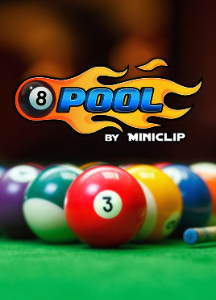
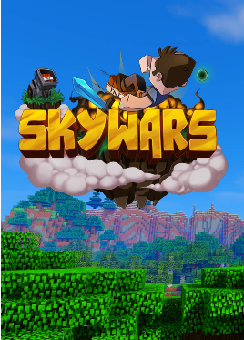
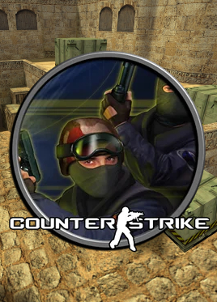

Bem-vindo a Copa Cyber!
Prepare-se para a competição! Aqui na Copa Cyber, reunimos os melhores campeonatos de eSports para você mostrar suas habilidades e se divertir. Junte-se a nós nos emocionantes torneios de:
- Sky Wars no Minecraft: Enfrente adversários em batalhas aéreas intensas e prove que você é o mestre dos céus!
- 1x1 no 8 Ball Pool: Mostre sua precisão e estratégia nas mesas de sinuca, onde cada jogada pode ser a decisiva.
- Counter-Strike 1.6: Entre na ação clássica de CS e desafie outros jogadores em duelos táticos e emocionantes.
- Free Fire 4x4: Forme sua equipe e lute em batalhas frenéticas, onde a comunicação e a estratégia são a chave para a vitória.
Seja você um novato ou um veterano, a Copa Cyber é o lugar perfeito para aprimorar suas habilidades, fazer novas amizades e, claro, competir por prêmios incríveis. Inscreva-se agora e venha fazer parte dessa comunidade apaixonada por eSports!
Vamos juntos elevar o nível da competição!
Conheça nossos jogos!

8 Ball Poll
Mais Detalhes

Minecraft Sky Wars
Mais Detalhes
